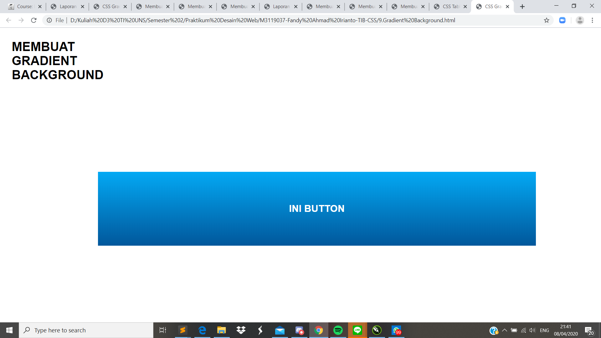

Gradient Background
Pendahuluan
Dalam css penggunaan background warna tidak hanya sebatas satu warna, tetapi bisa menggunakan beberapa warna yang di gabung menjadi satu yang di sebut Gradient dan dalam pembuatan background gradient terdapat pengaturan - pengaturan yang saya pikir cukup untuk membuat sebuah background yang menarik. Maka dari itu Gradient Background merupakan property untuk memberi background dengan warna gradient atau bergradasi. Dalam hal ini, terdapat 2 jenis gradient yaitu : linear dan radial.
Codingan
Kode CSS Eksternal
Hasil Screenshot
Analisis
Pada percobaan membuat gradient pada background kali ini, saya memperbesar ukuran background dengan menambahkan fitur width dibagian css dan mengubah ukuran margin. Jadi dengan adanya gradient background ini kita dapat mepercantik tampilan background kita dengan warna yang dapat dipadukan.